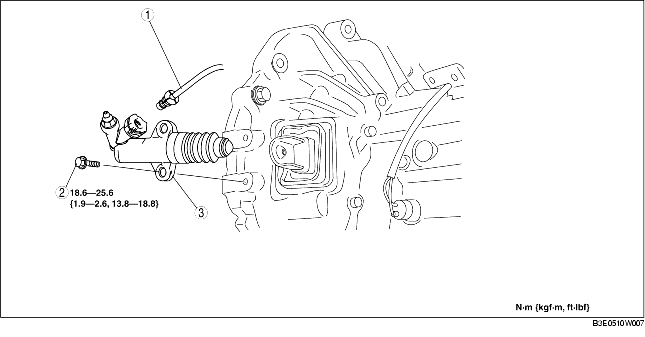

1. Remove the under cover.
2. Remove in the order indicated in the table.
3. Install in the reverse order of removal.

.
1. Pull the clip to the position shown in the figure and pull out the clutch pipe connector straight to detach it.
F35M-R
G35M-R
1. Return the clip to the position shown in the figure.
F35M-R
G35M-R
2. Insert the clutch pipe connector straight.
3. Pull the clutch pipe to verify that it does not come off, and reinsert it completely.